Alt+Space — и всё находится сразу
SpotDesk — быстрый поиск для Windows, как Spotlight в macOS. Строка посередине экрана: программы, файлы и папки, калькулятор, курсы валют ЦБ, единицы, время в городах, команды и параметры Windows — Enter открывает, Esc прячет.
Скачать SpotDesk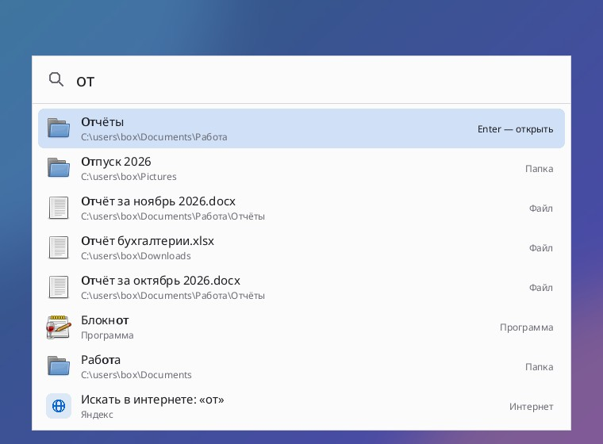
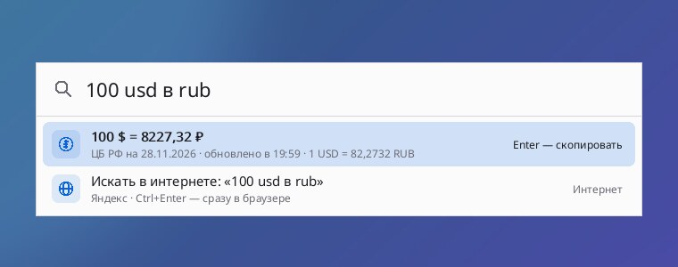
Что умеет
Бесплатно · без установки · без рекламы и без слежки · обновляется сама
Программы
Меню «Пуск», рабочий стол и приложения Microsoft Store. Нечёткий поиск: «vsc» найдёт Visual Studio Code. Частые — выше.
Файлы и папки
Свой индекс имён, как в Everything: строится в фоне с низким приоритетом и обновляется сам. По желанию — весь диск NTFS за секунды.
Калькулятор
«2+2*2», «sqrt 16», «2^10», «15% от 3000» — ответ первой строкой, Enter копирует его в буфер.
Курсы валют
«100 usd в rub», «50 евро в рублях», «курс юаня» — по официальному курсу ЦБ РФ на сегодня, с датой и временем проверки. Обновляется сам, когда курсу больше часа.
Единицы измерения
«5 км в милях», «30c to f», «10 фунтов в кг», «1 гб в мб», «100 км/ч», «10 соток в м2» — без интернета.
Даты и время
«время в токио», «дней до нового года», «через 100 дней», «сегодня». Больше 70 городов по часовым поясам Windows.
Команды
«блокировка», «сон», «перезагрузка», «выключить», «очистить корзину». Опасные — только после второго Enter.
Параметры Windows
«bluetooth», «экран», «wi-fi», «звук», «обновления», «автозагрузка» — сразу нужная страница.
С клавиатуры
↑↓ — выбор, Enter — открыть, Ctrl+Enter — показать в папке, Shift+Enter — от администратора, Tab — дополнить.
Ответы из интернета в окне
Enter на «Искать в интернете» — быстрый ответ и ссылки прямо в окне, без браузера (DuckDuckGo и Википедия). Пока вы печатаете, в сеть ничего не уходит.
Поиск в интернете
Не нашлось на компьютере — последняя строка ищет в Яндексе, Google, DuckDuckGo или Bing. Префиксы: «g …», «я …», «yt …», «вики …».
Лёгкая
Панель появляется мгновенно, а в простое не тратит процессор: ни опросов, ни хуков клавиатуры.
Всё отключается
У каждой функции свой переключатель, горячая клавиша меняется. Если Alt+Space занято — SpotDesk предупредит.
Светлая и тёмная
Следует теме Windows или выбирается вручную. По желанию — полупрозрачный фон: акрил в Windows 11, размытие в Windows 10.
Как это выглядит
Настоящие снимки SpotDesk 1.2.0
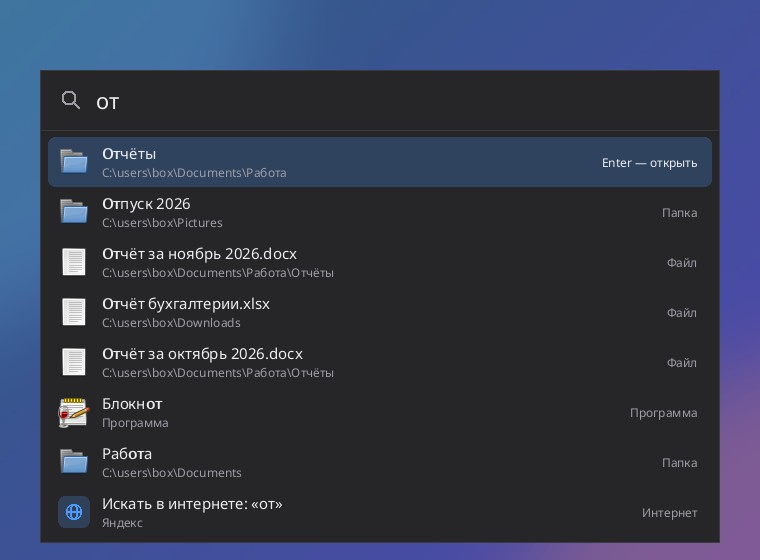
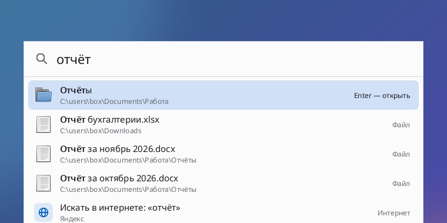
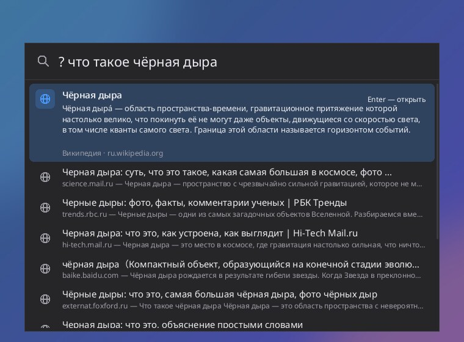
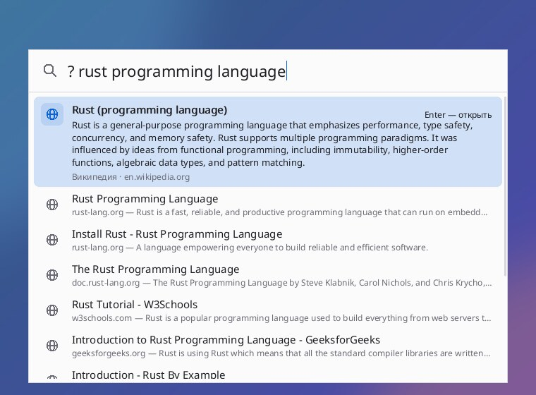
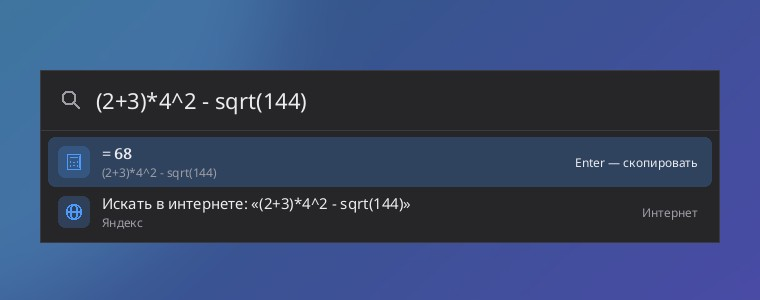
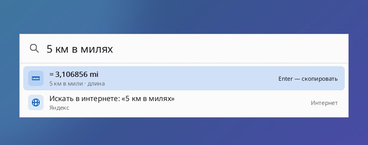
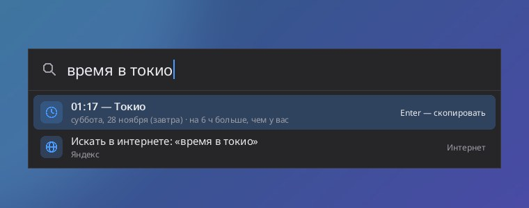
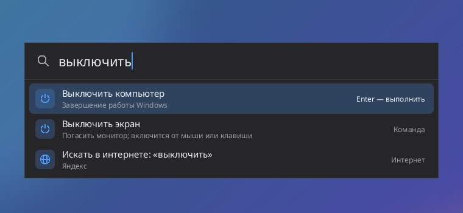
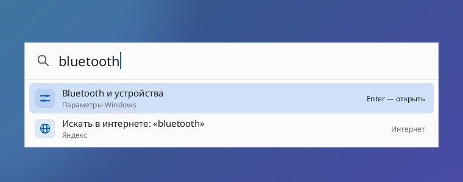
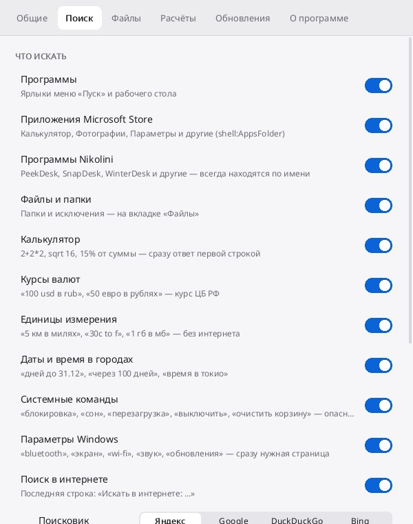
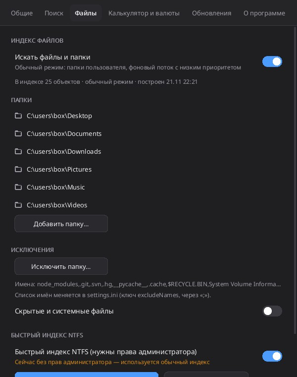
Как установить
- Скачайте SpotDesk-win64.zip.
- Распакуйте архив в постоянную папку, например
Документы\SpotDesk. - Запустите SpotDesk.exe — значок появится в трее у часов. Нажмите Alt+Space.
- Если Windows покажет «Система Windows защитила ваш компьютер» — «Подробнее» → «Выполнить в любом случае».
Устанавливать ничего не нужно. При первом запуске SpotDesk добавляет себя в автозапуск (выключается в настройках). Чтобы удалить — «Выход» в меню значка и удалить папку.
Клавиши
Сочетание для открытия меняется в настройках
| Alt+Space | открыть или спрятать поиск |
| ↑ ↓ · PgUp PgDn | выбрать строку |
| Enter | открыть; для расчёта, курса, единиц и дат — скопировать ответ; выключение и перезагрузка — дважды |
| Ctrl+Enter | показать файл в папке |
| Shift+Enter | запустить от имени администратора |
| Tab | дополнить запрос |
| Esc | спрятать поиск (или щёлкните мимо) |
Вопросы
Windows пишет «Система Windows защитила ваш компьютер»
Это фильтр SmartScreen: программа новая и не подписана платным сертификатом. Нажмите «Подробнее» → «Выполнить в любом случае». Скачивайте SpotDesk только со страницы выпусков — рядом с архивом лежит файл .sha256.
Alt+Space не срабатывает
Сочетание может быть занято PowerToys Run или другой программой. Откройте настройки и выберите другое, например Ctrl+Space или Win+Space.
Полупрозрачный фон не включается
Включите его в «Настройки → Общие → Полупрозрачный фон» и проверьте, что в Windows включены «Эффекты прозрачности» (Параметры → Персонализация → Цвета). В режиме экономии заряда Windows сама делает фон сплошным.
Не будет ли тормозить компьютер?
Нет. В простое SpotDesk ничего не опрашивает, индекс строится в фоне с низким приоритетом и обновляется по уведомлениям Windows.
Почему не находятся файлы с диска D:?
По умолчанию индексируются папки пользователя. Добавьте нужные папки во вкладке «Файлы» или включите «Быстрый индекс NTFS» (нужен запуск от имени администратора).
Программа что-нибудь собирает или отправляет?
Нет. Индекс и история остаются на вашем компьютере. В интернет — только проверка обновлений и списка программ Nikolini на GitHub и курсы ЦБ РФ, когда вы пересчитываете валюту.
Другие программы от Nikolini
Тоже бесплатные, лёгкие и без рекламы
Обсуждение
Предложить идею · Сообщить о баге · Все обсуждения
Вопросы, идеи и новости о выпусках — в обсуждениях проекта на GitHub.